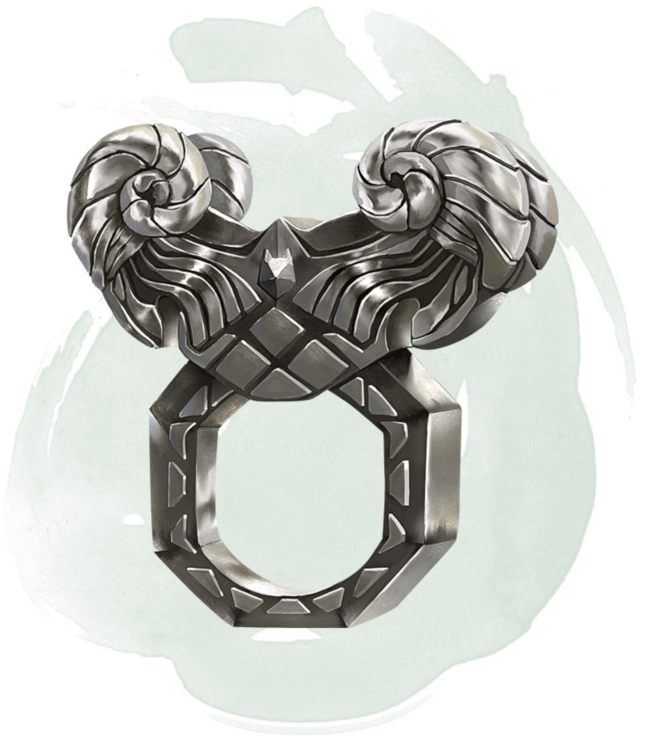

Ring of the Ram
[ Anneau du bélier ]
Ring, rare (requires attunement)
This ring has 3 charges, and it regains 1d3 expended charges daily at dawn. While wearing the ring, you can use an action to expend 1 to 3 of its charges to make a ranged spell attack against one creature you can see within 60 feet of you. The ring produces a spectral ram's head and makes its attack roll with a +7 bonus. On a hit, for each charge you spend, the target takes 2d10 force damage and is pushed 5 feet away from you.
Alternatively, you can expend 1 to 3 of the ring's charges as an action to try to break an object you can see within 60 feet of you that isn't being worn or carried. The ring makes a Strength check with a +5 bonus for each charge you spend.
Alternatively, you can expend 1 to 3 of the ring's charges as an action to try to break an object you can see within 60 feet of you that isn't being worn or carried. The ring makes a Strength check with a +5 bonus for each charge you spend.
Dungeon Master´s Guide (SRD)
